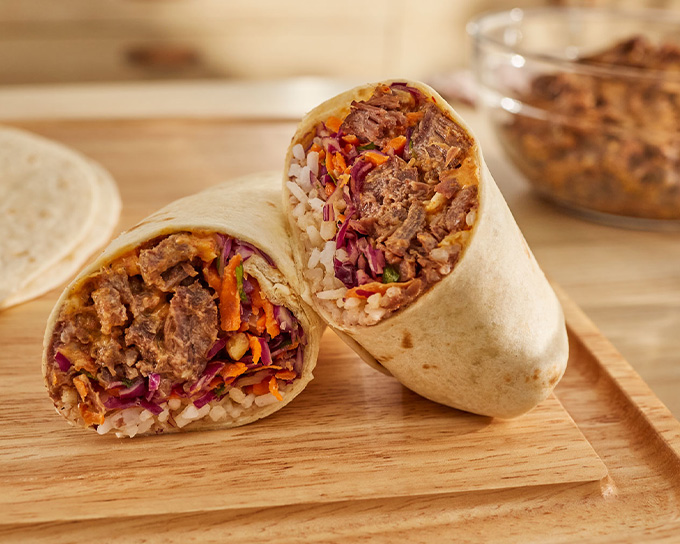

Burrito Recipe!!

For this recipe, I will talk about how to make burritos easily and at home. This burrito
recipe will only use ingredients easily found in supermarkets in Japan, because that's where I live.
I hope you enjoy following and making this recipe, and learn something in the process!
Ingredients
- torillas
- mexican/shredded cheese
- tomatoes
- meat
- beans
- onions
- bell pepper
Instructions
- cut the onions, bell pepper, and beans on a cutting board
- Using some oil, fry the onions, bell pepper, and meat, adding salt
- heat up some tortillas on the frying pan
- On a plate, fill each tortilla up with cooked onions, bell pepper, meat, tomatoes, and cheese.
- Fold and wrap the tortilla into a burrito. Enjoy!
Home